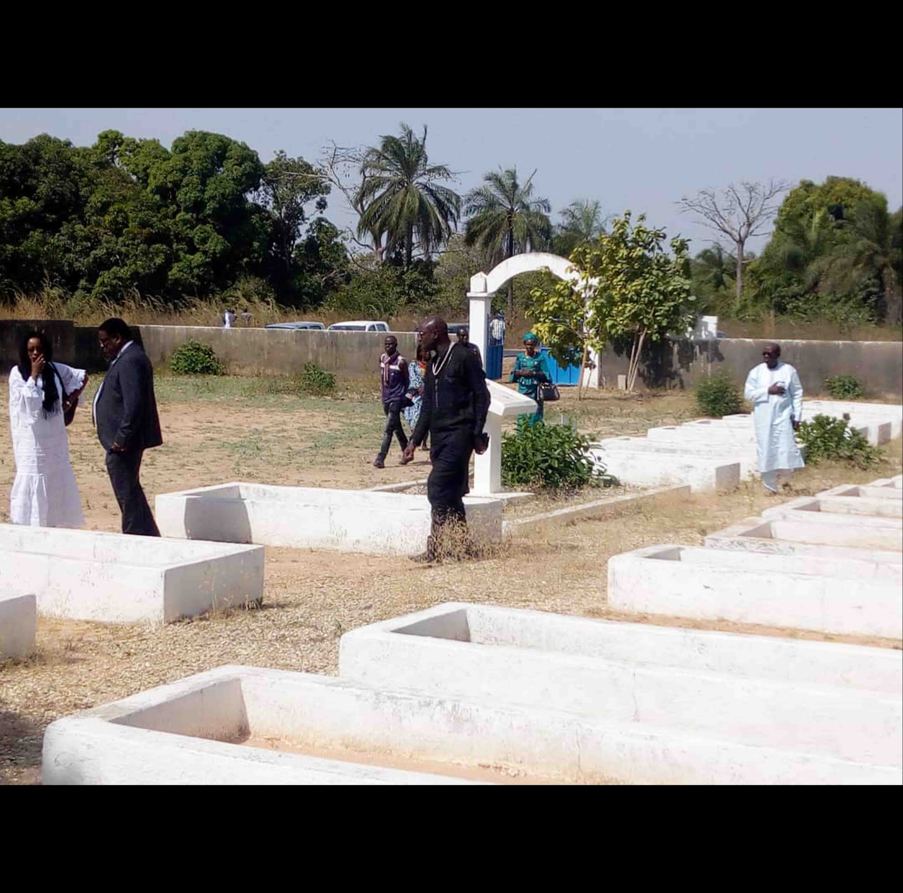
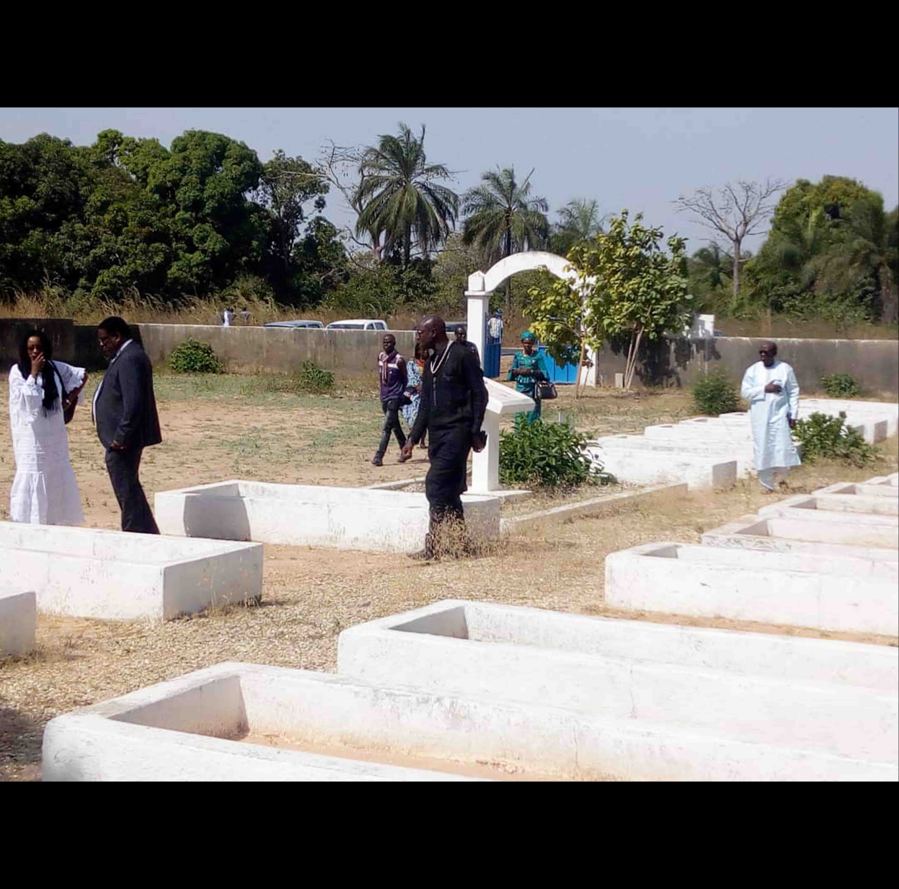
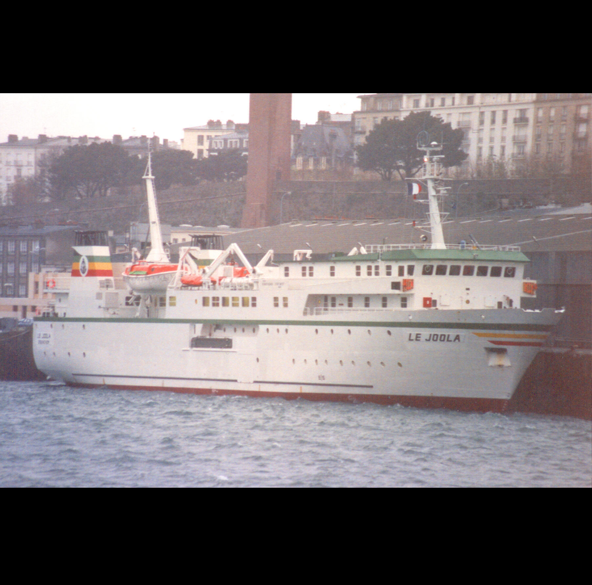
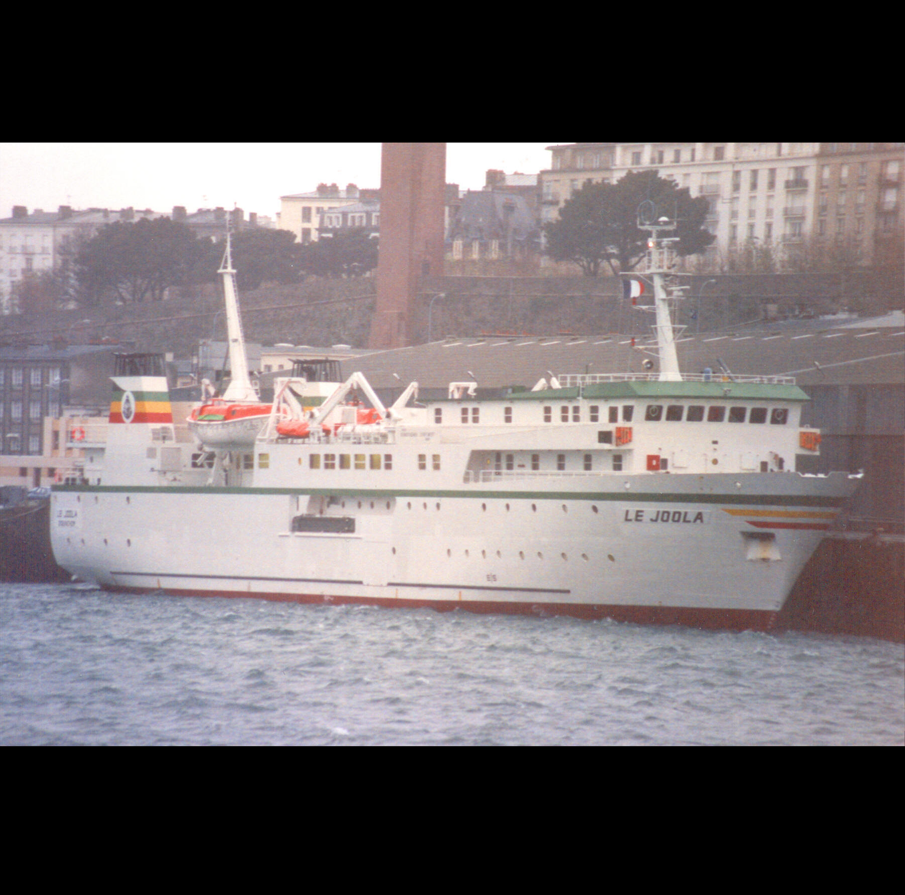

Ziguinchor
Ce port est un le lieu de commémoration en ce sens qu’il fut le point d’embarquement du Bateau le Joola avant son départ vers Dakar. Il reste un symbole fort dans l’histoire du transport maritime au Sénégal.
Département : Ziguinchor
Région : Ziguinchor
Latitude de Ziguinchor: 12.586962
Longitude de Ziguinchor: -16.275713
Carabane
Escale de la liaison maritime Dakar-Ziguinchor, Carabane était un des passages incontournables dans le circuit du Bateau le Joola. Avant son chavirement le Joola aurait marqué une escale dans cette belle île historique à l’histoire centenaire. Elle porte aujourd’hui les stigmates de la mémoire du naufrage et reste éternellement un lieu de souvenir de la mémoire.
Latitude de Carabane: 12.545365
Longitude de Carabane: -16.699584
Port de Dakar
C’est à partir de ce port que le Bateau le Joola a effectué son voyage inaugural vers Ziguinchor le 14 décembre 1990. Il demeure toutefois un lieu de commémoration et de souvenir en mémoire des victimes du naufrage.


Latitude de Dakar: 14.656604
Longitude de Dakar: -17.430826
Cimetière de Mbao
Aménagé en 2002 par l’Etat du Sénégal, le Cimetière Des naufrages du Joola accueille aujourd’hui 145 victimes du naufrage du Joola. Il représente un témoin historique de l’histoire de la tragédie du trafic maritime au Sénégal. À l’instar des sites de mémoires, le cimetière de Mbao est un lieu de souvenir et de commémoration des victimes du naufrage du Joola.
Région : Dakar
Département : Pikine
Latitude de CimetièreDeMbao: 14.730322687757852
Longitude de CimetièreDeMbao: -17.31733883231745
Cimetière De Bel-Air
Le cimetière Bel-Air est un cimetière catholique à Dakar (Sénégal). Le lieu-dit de Bel Air abrite un cimetière initialement destiné aux habitants de Gorée, chrétiens ou musulmans depuis 1832, puis ouvert aux militaires et aux résidents de Dakar. En 1857, son entretien est confié aux religieux de la Mission, affirmant ainsi progressivement l’identité chrétienne du cimetière qui perdure par la suite. Il comprend une partie civile et une partie militaire, qui honore les soldats de l’infanterie coloniale ou des régiments de tirailleurs sénégalais morts au combat. En mémoire des soldats tombés au cours de la Première Guerre mondiale, un monument porte l’inscription « À nos morts coloniaux ». Près de l’entrée, une statue, œuvre du sculpteur Hippolyte Marius Galy, honore les morts de l’AOF.
Latitude de CimetièreDeBelAir: 12.483938
Longitude de CimetièreDeBelAir: -16.692740
Cimetière Saint Lazare De Béthanie
Le cimetière Saint Lazare de Béthanie est un haut lieu de pèlerinage, en souvenir de la mémoire des victimes du naufrage du bateau le Joola. Il accueille aujourd’hui la mémoire de Trent cinq (35) victimes. Un mausolée et un monument y sont édifiés par l’Archevêque de Dakar, Monseigneur Théodore Adrien SARR et la communauté chrétienne. Ces deux édifices ont été inaugurés en 2005.
Région : Dakar
Département : Pikine
Latitude de CimetièreSaintLazareDeBéthanie: 12.492118
Longitude de CimetièreSaintLazareDeBéthanie: -16.684339
Cimetière De Yoff
Le cimetière musulman de Yoff, à l’image du cimetière catholique de Saint Lazare de Béthanie, est à la fois un lieu de mémoire et un symbole de la souffrance du naufrage du bateau le Joola. Aujourd’hui il est lieu de repos de trente-sept (37) victimes de la plus grande tragédie de l’histoire du transport maritime du Sénégal.
Région : Dakar
Département : Dakar
Latitude de CimetièreDeYoff: 14.728694
Longitude de CimetièreDeYoff: -17.474180
La Mémoire De L'UCAD
Pour commémorer la mémoire des étudiants péris dans le naufrage du bateau le Joola de 2002, une stèle mémorielle, portant les noms de 79 étudiants ainsi que leurs départements et leurs facultés respectives, est érigée devant l’entrée de l’ancien bâtiment du service de scolarité de la Faculté des Lettres et des Sciences Humaines. Ce monument représente le lieu de recueillement et de souvenir des étudiants victimes de cette violente tragédie maritime.
Latitude de UCAD: 14.728800
Longitude de UCAD: -17.474530
CimetièreDeKantene
L’île de Kantene est une localité de la région de Ziguinchor qui fait partie du département de Bignona et de la commune de KATABA 1. Selon son chef de village CHERIF DIATTA, la localité est fondée vers 1800 par Kalibe Essama Diatta. La population est estimée aujourd’hui 500 habitants répartis dans une centaine de ménages. Sur le plan religieux, un parfait équilibre est observé entre l’islam, le christianisme et l’animisme. La population de l’île est composée de joola, ghanéen, manjack, peulh et soussou. L’émigration qui constituait naguère une source de revenus du village est abandonnée par les jeunes puisqu’ils ont pris conscience des difficultés du monde extérieur. Les activités traditionnelles tournent autour de la danse ékonkone et des séances de lutte. Les ressources économiques sont l’eau et la terre. L’île de CimetièreDeKantene compte en termes d’infrastructures un foyer des jeunes, une case de santé, une école maternelle et une école élémentaire. D’après le chef de village, les sources d’information de l’île sont la télévision, la radio et le téléphone. La plupart des décisions se prennent par concertation.
 

Région : Ziguinchor
Département : Ziguinchor
Latitude de CimetièreDeKantene: 12.575329
Longitude de CimetièreDeKantene: -16.745749
La place du Souvenir
Située sur la corniche ouest de Dakar, la Place du Souvenir Africain, réceptacle de la mémoire des peuples noirs, de ses martyrs, de ses militants et symboles de la dignité africaine, est matérialisée par un monument d’une carte de l’Afrique, peint dans ses différentes couleurs. De plus d’être un Mémorial-Musée, un pieu d’étoile noire a été placé à l’esplanade pour symboliser le drame du naufrage. Il accueille chaque année les cérémonies de commémoration de l’anniversaire du naufrage.
Région : Dakar
Département : Dakar
Latitude de LaPlaceDuSouvenir: 12.618843
Longitude de LaPlaceDuSouvenir: -16.689675
Niomoune
Niomoune est une île de la région de Ziguinchor qui fait partie du département de Bignona et dans la commune de Kafountine. D’après ADAMA JULES TABAR, un cultivateur de Niomoune et frère du chef de village RIGOBERT TABAR, le premier habitant de cette localité s’appelle Diamounougho Badji. Actuellement, le village compte au moins 500 habitants exclusivement joola et répartis dans la religion traditionnelle et celle du christianisme. Le village compte une infrastructure sanitaire et une école publique. Face à une situation, lorsqu’il faut prendre une décision, c’est toutes les personnes majeures qui sont impliqués.
 


Latitude de Niomoune: 12.632809
Longitude de Niomoune:-16.649399
Cagnout
Le village de Cagnout est une localité de la région de Ziguinchor qui fait partie du département d’Oussouye et de la commune de Mlomp. MAAN SIMENG BUHAL, 9ème roi du Cagnout, règne dans cette localité (Royaume Essoumal de Cagnout). Constitué majoritairement de joola, le village est aujourd’hui un espace où religion traditionnelle, christianisme et islam cohabitent. Concernant les mouvements de population, les habitants de Cagnout se déplacent vers Dakar, dans la sous-région, en Europe et même en Amérique.


Latitude de Cagnout: 12.551213
Longitude de Cagnout: -16.626526
Samatite
Localité côtière de la Gambie, qui a reçu la première sépulture de victimes du naufrage du Joola, découvertes à la dérive au bord de la plage, Sanyang est selon la mémoire vivante l’endroit où le Joola a coulé. Les premières victimes de ce drame furent secourues par les pêcheurs de la localité. Sanyang demeure aujourd’hui un lieu central dans la reconstitution de l’histoire de cette catastrophe maritime.

Latitude de Samatite: 12.537239
Longitude de Samatite: -16.644127
Saint-Georges
La Pointe Saint-Georges est une localité du département d’Oussouye et de la commune de Mlomp. D’après Alexandre DIEME (frère du chef de village), Pointe Saint-Georges est encore appelé Ponta di réa (appellation portugaise). C’est une localité qui compte environ 300 habitants composés de joola, mandingue et manjack avec comme principales religions le christianisme, l’animisme et l’islam. Les tournois de foot et les soirées dansantes sont les principales activités récréatives et activités du village. Le village dispose d’une école élémentaire. D’après RENÉ SAGNA, l’adjoint au chef de village, les ressources principales du village sont la terre et l’eau qui facilitent la pratique de la pêche, l’agriculture, l’exploitation des produits halieutiques. Les sources d’information de la localité sont la radio, le téléphone et la transmission de bouche à oreille. Les décisions dans le village sont prises de façon inclusive où hommes et femmes sont tous impliqués.

Latitude de Saint-Georges: 12.615721
Longitude de Saint-Georges: -16.566130
Elinkine
Elinkine est une localité du Sénégal qui se trouve dans le département d’Oussouye et la commune de Mlomp. Cette localité serait à l’origine une propriété du village de Samatite.D’après son Chef de village MAMADOU NDIAYE, Elinkine compte environ 400 habitants. La diversité ethnique est grande : Joola, Guinéen, Bissau guinéen, Ghanéens, Serere, Peulh, Mandingue, Manjack, Mancagne Soninké, … À Elinkine, les religions pratiquées sont l’animisme, le christianisme et l’islam. Les activités culturelles sont basées sur la danse traditionnelle d’ekonkone, la lutte traditionnelle et l’organisation de tournois de football.

Latitude de Elinkine: 12.506470
Longitude de Elinkine: -16.662848
Mlomp
Mlomp est une commune du Sénégal qui se trouve dans le département d’Oussouye. Il est noté la présence d’autorités administratives et traditionnelle avec la présence d’un Roi MAAN SIBILE SAMBOU. D’après ce dernier, Mlomp serait issu d’une vague migratoire venue de la Guinée Bissau, guidée par des oiseaux marins vers leur habitat naturel. Concernant les croyances, la religion traditionnelle, le christianisme et l’islam constituent les religions pratiquées par les principaux groupes joola (majoritaires) et peulh. D’après Maan Sibilé Sambou, Roi de Mlomp, les événements culturels les plus importants restent le Kamaghène (fête des récoltes), le bougnit (célébration de la fin des activités agricoles), la danse d’ekonkone et la lutte traditionnelle. Pour ce qui est des prises de décisions dans la localité, elles sont assurées par l’autorité administrative d’une part et le gouvernement du roi d’autre part. Les activités économiques pratiquées dans la commune de Mlomp sont l’agriculture vivrière et l’élevage. Concernant les infrastructures, la commune possède des écoles élémentaires et maternelles, d’un CEM et d’un lycée.

Latitude de Mlomp: 12.558660
Longitude de Mlomp: -16.578902
Affiniam
Affiniam est un village du Sénégal de la commune de Mangagoulack, située dans l'arrondissement de Tendouck, département de Bignona, région de Ziguinchor. Il est situé à quelques kilomètres au nord-ouest de Ziguinchor, de l'autre côté du fleuve Casamance. Sa population est estimée à 1620 habitants et 226 ménages, suite au recensement de 2013. Les principales activités du village reposent sur l'agriculture, la riziculture, la pêche artisanale, l'élevage (bovins, porcins, ovins et volailles) le maraîchage et la récolte du vin de palme. Parmi les infrastructures, le village dispose d'un campement, d’un foyer des jeunes, d’une école, d’une maternité et d’une case de santé. Le célèbre barrage d’Affiniam est construit en 1988 pour empêcher la salinisation des terres agricoles et faciliter l'irrigation pour la riziculture.
Latitude de Affiniam: 12.558660
Longitude de Affiniam: -16.578902
Bassori
Bassori est un village situé dans le district de Kombo Central près de la deuxième plus grande ville de la Gambie Brikama et très proche du poste frontalier de Siliti. Ce cimetière est le seul endroit qui a été aménagé par le gouvernement de la Gambie lors du drame de 2002, en vue d’accueillir les dépouilles des victimes du bateau le Joola qui ont dérivés le long des localités de la côte gambienne (Tanjei, Tujereng, Sanyang, Gunjur, Katong etc.). Le choix de Bassori est justifié par sa position stratégique à cheval entre le Sénégal et la Gambie. De nos jours, ce cimetière est devenu un haut lieu de commémoration, de pèlerinage et de recueillement pour les familles des victimes. Une stèle en ciment où sont estampillés les noms de quelques victimes y a été construite. Ce cimetière abrite plusieurs victimes sénégalaises et gambiennes de cette grande catastrophe.
Latitude de Bassori: 12.558660
Longitude de Bassori: -16.578902
Kabadio
Kabadio est un village de la région de Ziguinchor, situé dans la commune de Diouloulou, non loin de la Gambie. Le site choisi pour accueillir les dépouilles de 34 victimes dont un seul a été identifié au moment du drame en 2002. Ce cimetière est composé d’un double alignement de tombes qui se joignent en un point d’estrade tel un hommage debout à toutes les victimes de cette tragédie. Ce sanctuaire représente un lieu privilégié de commémoration et de recueillement de prières pour les familles de victimes.
Latitude de Kabadio: 12.558660
Longitude de Kabadio: -16.578902
Sanyang
Sanyang est une commune du Sénégal qui se trouve dans le département d’Oussouye. Il est noté la présence d’autorités administratives et traditionnelle avec la présence d’un Roi MAAN SIBILE SAMBOU. D’après ce dernier, Mlomp serait issu d’une vague migratoire venue de la Guinée Bissau, guidée par des oiseaux marins vers leur habitat naturel. Concernant les croyances, la religion traditionnelle, le christianisme et l’islam constituent les religions pratiquées par les principaux groupes joola (majoritaires) et peulh. D’après Maan Sibilé Sambou, Roi de Mlomp, les événements culturels les plus importants restent le Kamaghène (fête des récoltes), le bougnit (célébration de la fin des activités agricoles), la danse d’ekonkone et la lutte traditionnelle. Pour ce qui est des prises de décisions dans la localité, elles sont assurées par l’autorité administrative d’une part et le gouvernement du roi d’autre part. Les activités économiques pratiquées dans la commune de Mlomp sont l’agriculture vivrière et l’élevage. Concernant les infrastructures, la commune possède des écoles élémentaires et maternelles, d’un CEM et d’un lycée.
Latitude de Sanyang: 12.558660
Longitude de Sanyang: -16.578902
Diembéring
La stèle de Diémbéring est située dans la localité d’Oussouye en Casamance. Cette stèle imposante, en ciment, est érigée à l’entrée de la ville, près du Collège privé Catholique. Elle a été financée par le concours de la diaspora et des habitants de la ville. Elle représente un lieu important de commémoration et de souvenir du naufrage du bateau le Joola. Clôturée par un mur jaune avec des grilles, elle porte l’empreinte des noms de 12 victimes, natifs de Diembéring qui ont pu être identifiées. Aujourd’hui, ce monument est un lieu de consolation, de recueillement et de prière pour les parents, amis et famille de victimes. Il reste un témoin éternel de la plus cruelle tragédie maritime pour cette ville. Il représente encore un bel hommage des populations à la disparition de personnes chères lors de la triste tragédie.

Latitude de Diembéring: 12.558660
Longitude de Diembéring: -16.578902
Lieu Du Naufrage
Au large des côtes gambiennes, à hauteur de la localité de Sanyang, fit naufrage le Bateau le Joola dans la nuit du 26 au 27 septembre 2002. L'épave git entre 11 et 16 mètres de profondeurs sur un fond marin sableux. La position de l'épave du Joola est devenu un lieu de repos éternel pour certaines victimes du naufrage. Quelques objets de cette épave constituent les contenus du musée du Mémorial Bateau le Joola, sis au quartier escale de Ziguinchor.
Latitude de Lieu Du Naufrage: 12.558660
Longitude de Lieu Du Naufrage: -16.578902